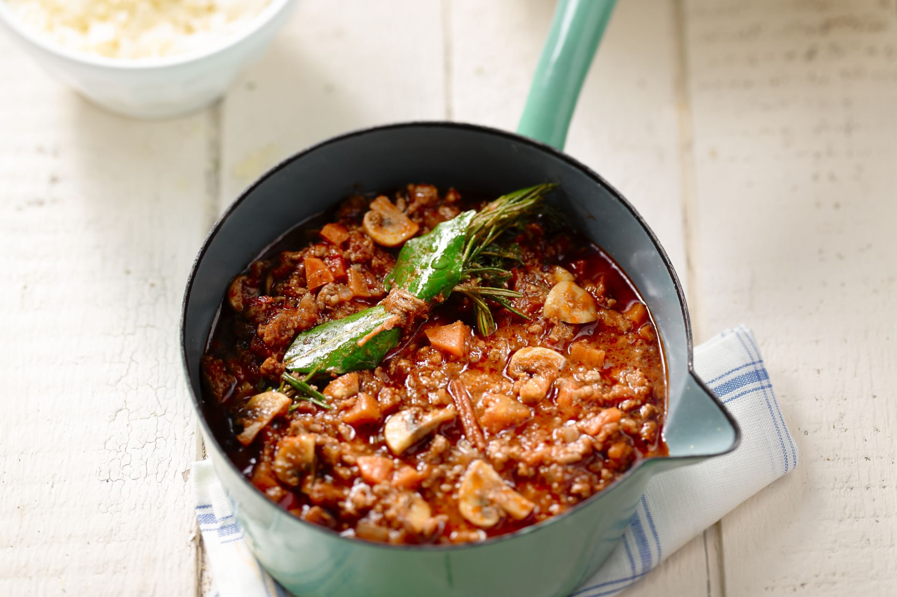

Fav Gerecht
Spaghetti bolognaise:

Benodigdheden:
- 600 g gemengd gehakt
- 450 g spaghetti
- 250 g champignons, in kwartjes
- 3 wortelen, in halve schijfjes
- 1 rode paprika, geschild en in blokjes
- 800 g tomatenblokjes, blik
- 70 g tomatenpuree, concentraat
- 400 ml tomatenpassata
- 2 uien, fijngesneden
- 2 teentjes knoflook, fijngehakt
- 4 el olijfolie
- 2 laurierblaadjes
- 3 takjes tijm
- 2 takjes rozemarijn
- 2 el oregano
- peper en zout
Uitvoering:
- Stoof de ui al roerend aan in wat olijfolie in een grote pot. Voeg er dan de wortel, knoflook en paprika aan toe. Laat zachtjes stoven en doe er na 5 minuten de champignons bij. Roer regelmatig om.
- Bak ondertussen in een andere pan het gehakt rul in olijfolie. Kruid ondertussen met voldoende peper en zout. Roer los met een vork.
- Doe het gebakken gehakt bij de groenten en verlaag het vuur. Bind de laurierblaadjes, de tijm en de rozemarijn samen tot een kruidentuiltje. Voeg het kruidentuiltje, de tomatenblokjes, -puree en -passata toe aan het gehaktmengsel. Roer goed om en breng op smaak met de oregano, peper en zout. Laat op een zacht vuur nog anderhalf uur stoven. Haal op het einde het kruidentuiltje eruit.
- Kook ondertussen de spaghetti in gezouten water zoals aangegeven op de verpakking. Giet af en laat uitlekken.
- Verdeel de pasta over de borden en lepel er de spaghettisaus over.